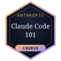

University of Maryland, Baltimore County
Master of Professional Studies in Data Science · GPA 3.84 / 4.00
Senior Data Scientist · Guardian Life × Fractal · Herndon, VA
I build production ML systems GenAI & agentic workflows forecasting pipelines decisions from data
Senior Data Scientist who takes models from a business question to production — propensity, next-best-action, forecasting and anomaly detection for insurance, energy and healthcare, with LLM workflows where they earn their place. I make the results explainable enough for executives and actuaries to act on.



Data Scientist building and deploying production ML and GenAI systems across insurance, financial services, enterprise AI, and healthcare — from EDA through deployment, monitoring and governance, translated into decisions for executive stakeholders.
I build cross-sell propensity models, next-best-action recommendation systems, and time-series forecasting pipelines (LightGBM, Prophet, XGBoost), and develop LLM workflows with RAG, prompt engineering and LangChain/LangGraph on AWS Bedrock, Databricks and Snowflake.
I work across the full model lifecycle: framing the business question, engineering features on messy enterprise data, modeling, and validating results with hand-traced QA and reconciliation before anything ships. I regularly take over high-stakes pipelines with fixed deadlines and make them reproducible. I favor methods people can interrogate, such as SHAP reason codes, decile lift and gains tables, because the advisors, marketers and actuaries using a model need to trust it. I work daily in Python, SQL, Spark, Databricks, Snowflake and AWS.
Today I'm a Senior Data Scientist with Fractal, embedded in Guardian Life's AI Studio. Before that I built reliability and forecasting systems on the C3 AI platform for energy and enterprise clients, and led data science at Impruvon Health. I hold a Master's in Data Science from UMBC. The long-term goal is to build an AI health-tech company for hospitals, patients and pharma.
Six chapters since 2021 — from software and finance to enterprise AI and insurance.
Senior Data Scientist
Senior Data Scientist
Programmer Intern (Part-time)
Data Science Lead · Data Scientist
Full-Stack Engineering Analyst
Software Engineer Intern (Data FT)
Master of Professional Studies in Data Science · GPA 3.84 / 4.00
B.Tech, Electronics & Communication Engineering · GPA 3.60 / 4.00
Leveraged DeepFace, computer vision, OpenCV, Dlib, and TensorFlow to develop and deploy a system capable of accurately identifying and verifying authorized personnel — 98%+ accuracy in secure facility access.
View ProjectImplemented an innovative NLP-based chatbot solution leveraging Google Cloud Platform's Vertex AI for the MVA, enhancing services for international students. Integrated cutting-edge Large Language Models (LLMs) for text summarization and cloud-based NLP capabilities to efficiently address queries — cutting manual workload by 60% and speeding resolution by 40%.
View ProjectDemonstrated the impact of the model on resource allocation within the health dept. by efficiently identifying high-risk restaurants for more frequent inspections and vice versa. Contributed to early intervention, resulting in a reduction in foodborne illnesses, ultimately enhancing public health.
View ProjectLeveraged financial modeling techniques, including CAPM, ARIMA, Monte Carlo and GARCH models to evaluate banking stocks during highly volatile market conditions and predict and forecast prices — a 20% improvement in portfolio risk-adjusted returns. Provided valuable insights and recommendations for effective investment strategies in the banking sector.
View ProjectAnalyzed cricket match data of 14 years to gain insights and make predictions about the game. Used Spark and Pandas to clean, transform, and analyze large datasets, including filtering, grouping, and aggregating. Conducted exploratory data analysis to uncover patterns and trends in the data. Developed and tested predictive models using machine learning algorithms such as regression and decision trees.
View ProjectAnalyzed and visualized data from a pre-published research papers website of 2017–2021 years of 45k+ papers.
View ProjectAn eCommerce application for small businesses that sell products/services. This application is in CLI format with two views — business and customer view.
View ProjectFilePro analyzes, visualizes a directory, and does operations like creating a hash using SHA256, and a directory summary in a CSV file (updates summary file if DOM is more than two days). Visualizes data in a line graph, bar graph, and pie chart.
View ProjectPrompt Engineering, RAG, LLM Orchestration & Evaluation, LangChain, LangGraph, Vector Databases, Embeddings, LLM Fine-tuning & Evaluation, Agentic Workflows, Guardrails
Supervised & Unsupervised Learning (Regression, Classification, Clustering), Time Series Forecasting, Anomaly Detection, Feature Engineering, Model Evaluation & Tuning, Scikit-learn, TensorFlow, PyTorch, LightGBM, XGBoost, Propensity Modeling, Recommendation Systems (Next Best Action), Customer Segmentation, Prophet, ARIMA/GARCH
ML Pipelines, Model Deployment, Model Monitoring, Retraining Pipelines, Experiment Tracking, Feature Stores, CI/CD for ML, Scalable ML Systems, MLflow, Model Governance, Model Versioning & Registry, Drift Detection
Pandas, NumPy, Exploratory Data Analysis (EDA), A/B Testing, Statistical Modeling, Hypothesis Testing, Power BI, AWS QuickSight, Plotly, Streamlit
Python, SQL, Git, Apache Spark, AWS (S3, Bedrock, Lambda), Snowflake, Data Warehousing, Databricks, Docker, GitHub Actions
MD, USA · Advisor at UMBC for incoming freshmen and transfer students
MD, USA · Advisor at UMBC for incoming freshmen and transfer students
USA · Hackathon to develop a solution for Make-A-Wish
India · Taught maths, C, and Java for 20+ juniors
India · Health Awareness 10 km marathon